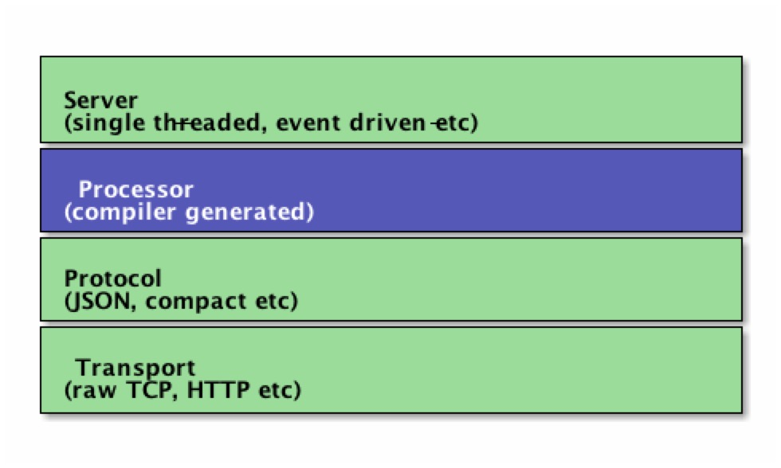

代码生成
1 基本概念
先看下图，Thrift 网络架构。

1.1 Transport （传输层）
传输层提供了一些简单抽象的从网络中读写的接口，这使 Thrift 能够将底层传输与系统的其余部分分离（例如，序列化/反序列化）。
传输层暴露的接口有：
- open
- close
- read
- write
- flush
除了上面的 Transport 接口之外，Thrift 还使用 ServerTransport 接口来接收或创建原始传输对象，也就是说，ServerTransport 主要用于服务器端，为传入连接创建新的传输对象。ServerTransport 接口有：
- listen
- accept
- close
1.2 协议（Protocol）
协议抽象定义了一种将内存数据结构映射成线性格式的机制，换句话说，协议指定数据类型如何使用底层传输进行编码/解码。因此协议的实现控制编码方案并负责序列化和反序列化，Thrift 提供的类似协议有基于 JSON、XML、plain text、compact binary 等。
协议的接口方法有如下：
writeMessageBegin(name, type, seq)
writeMessageEnd()
writeStructBegin(name)
writeStructEnd()
writeFieldBegin(name, type, id)
writeFieldEnd()
writeFieldStop()
writeMapBegin(ktype, vtype, size)
writeMapEnd()
writeListBegin(etype, size)
writeListEnd()
writeSetBegin(etype, size)
writeSetEnd()
writeBool(bool)
writeByte(byte)
writeI16(i16)
writeI32(i32)
writeI64(i64)
writeDouble(double)
writeString(string)
name, type, seq = readMessageBegin()
readMessageEnd()
name = readStructBegin()
readStructEnd()
name, type, id = readFieldBegin()
readFieldEnd()
k, v, size = readMapBegin()
readMapEnd()
etype, size = readListBegin()
readListEnd()
etype, size = readSetBegin()
readSetEnd()
bool = readBool()
byte = readByte()
i16 = readI16()
i32 = readI32()
i64 = readI64()
double = readDouble()
string = readString()
Thrift 协议是以流的形式设计的，因此不需要任何明确的框架，例如，在开始序列化之前，无需知道字符串的长度或者列表中元素的数目。
以下是 Thrift 支持的大多数语言可用的一些协议：
- binary 简单的二进制编码，编码为二进制时是，字段的长度，字段的类型，字段的值
- compact 压缩的二进制
- json JSON 格式
1.3 处理器（Processor）
处理器封装了从输入流读取数据和写入数据到输出流的能力，输入和输出流均是由协议(Protocol)对象表示的，所以处理器接口异常的简单：
interface TProcessor {
bool process(TProtocol in, TProtocol out) throws TException
}
特定于服务的处理器是由编译器生成的，处理器一般是从网络中读取数据（使用输入协议），将处理委托给处理程序（由用户实现），然后将处理结果通过网络传递给客户端（使用输出协议）。
1.4 服务器
服务器汇聚了以上各种功能：
- 创建传输层（Transport）
- 为传输层创建输入/输出协议
- 基于输入/输出协议创建处理器
- 等待传入连接并将其交给处理器